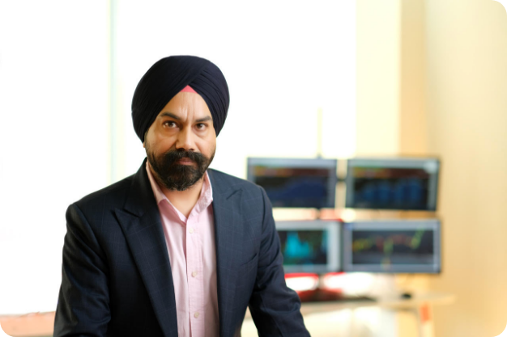

Who we are
A Technology Driven Trading Firm
About Plus Wealth
Plus Wealth was founded by two dynamic young men, Parmeet Singh Chadha and Gaurav Chhabra, who were highly fascinated by the world of stock markets from an early age. This curiosity led them to begin their journey in trading during their college days, when they started trading in Nifty options with a small investment.
They quickly realized that technology would transform the way financial markets work. With this conviction, Plus Wealth was established in 2008 as a proprietary quantitative high frequency trading firm.
Over time, Plus Wealth has grown from a small team into a firm of over 90 professionals working as equity researchers, quantitative analysts, traders and technologists.
Tech Resources
Plus Wealth has invested heavily in technology, infrastructure and research capabilities to create a strong trading ecosystem. Our technologists, quantitative analysts and traders work closely together to design, test and deploy systems that support high frequency trading across global markets.
Our focus is on building robust, scalable and reliable trading platforms that help us respond to complex market conditions with speed and discipline.
Quantitative Resources
At Plus Wealth, our main emphasis is on having a clearer understanding of markets to gain from them. Through the use of techniques such as filtering, classification, time series analysis, pattern recognition, stochastic models and statistical inference, we analyse terabytes of data to identify pricing inefficiencies in financial markets.
Our quantitative approach helps us combine research, automation and market insight into a disciplined trading process.

PlusWealth is a proprietary quantitative high-frequency trading
firm excelling in global financial markets.